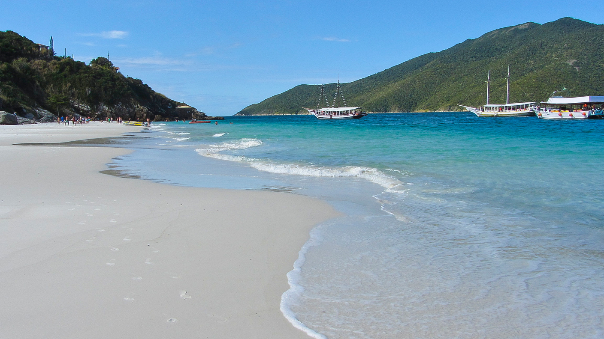

A água mais cristalina do Sudeste — mar turquesa, areia branca, mergulho incrível e praias que parecem Caribe
Cada praia tem personalidade própria — algumas só acessíveis de barco
As praias da foto que viral no Instagram — água turquesa intenso acessada pela famosa escadaria de pedra. Vista do Mirante do Pontal é de tirar o fôlego. Acesso a pé pelo Morro do Atalaia (4 km do centro). Não é indicada para banho de mar pelo alto fluxo — vai pela beleza visual.
Acessível somente de barco — águas absolutamente cristalinas, pouca gente e visual paradisíaco. Uma das paradas obrigatórias do passeio de escuna. Para quem quer a praia mais exclusiva de Arraial sem pagar por lancha privativa.
A praia mais longa de Arraial — boa para banho de mar, caminhadas e acesso fácil. Próxima ao centro da cidade com boa estrutura de bares e restaurantes. Ideal para dias tranquilos sem precisar pegar barco ou caminhar muito.
Favorita dos surfistas — ondas fortes, não indicada para banho de mar. Acesso a pé pelo Morro do Atalaia (4 km do centro). Visual espetacular dos morros e do oceano. Para quem gosta de adrenalina ou fotografia de paisagens dramáticas.
O passeio de barco é a alma de Arraial do Cabo
O passeio mais procurado — escuna cobrindo Gruta Azul, Ilha do Farol, Prainhas do Pontal do Atalaia e Praia do Forno com paradas para snorkel. Duração: ~4 horas. Saída da Praia dos Anjos. Taxa municipal de embarque de R$ 10/pessoa paga no píer à parte.
Buggy pelas dunas e praias da região — 2 horas de passeio com bugueiro credenciado. Ótima opção para quem quer aventura fora do barco. Combo Barco + Buggy para 2 pessoas sai a partir de R$ 559,90. Mínimo de 2 pessoas por buggy.
A Lagoa de Araruama é uma das melhores lagoas do Brasil para kitesurf — ventos constantes e água calma. Escolas de kite na região oferecem aulas para iniciantes e aluguel de equipamento para experientes. Lagoa hiperssalina próxima a Arraial.
Voo de paramotor sobre as praias e morros de Arraial do Cabo — a vista aérea das Prainhas e da Ilha do Farol é absolutamente espetacular. Para quem quer a perspectiva mais diferente possível do "Caribe Brasileiro".
Visibilidade de até 20m — um dos melhores pontos do Sudeste
Mergulho acompanhado por instrutor credenciado — sem necessidade de experiência prévia. Visibilidade de até 20 metros nas melhores condições. Um dos pontos mais acessíveis e seguros para o primeiro mergulho do Brasil. Mínimo de 10 anos de idade.
O melhor dos dois mundos: passeio de barco pelos pontos clássicos + mergulho batismo com instrutor. Para 2 pessoas. Ideal para casais ou amigos que querem a experiência mais completa de Arraial em um único dia.
O passeio de escuna já inclui paradas para snorkel na Praia do Forno, Enseada do Forno e outros pontos — 20 a 30 minutos em cada. Leve máscara e snorkel próprios para melhor aproveitamento. Aluguel disponível a bordo em algumas embarcações.
Praia dos Anjos, Prainha e Praia Grande — as melhores regiões
O ponto de saída das escunas fica aqui — ficar na Praia dos Anjos facilita muito a logística. Bom acesso a pé para bares e restaurantes. Atenção: a Praia dos Anjos em si não é boa para banho. Pousadas econômicas a partir de R$ 200/noite com café da manhã.
Regiões próximas ao centro com boa estrutura de restaurantes e fácil acesso a pé às principais praias. Pousada Vista Turquesa e outras opções com vista para o mar. Média geral de hospedagem em Arraial: R$ 369/noite.
Arraial tem pousadas mais econômicas que outros destinos litorâneos do RJ. Pousada Arraial Caribe (R$ 247+, nota 8,8 Booking) e Pousada Mar dos Anjos (R$ 200+, nota 9,0) são destaques. Quarto duplo básico com café da manhã a partir de R$ 167 fora da alta temporada.
Praia dos Anjos, Prainha ou Praia Grande — compare preços com cancelamento gratuito
Ver disponibilidade no Booking.com →Frutos do mar frescos e restaurantes à beira-mar
O eixo gastronômico de Arraial — bares e restaurantes com frutos do mar frescos à beira-mar. Camarões em linguine de limão é prato frequentemente elogiado. Bom para almoço após o passeio de escuna (que sai daqui) e para jantar tranquilo.
A praça central de Arraial tem festa toda noite de sábado com movimento animado. Bares e restaurantes ao redor concentram boa parte da vida noturna da cidade. Para quem quer jantar bem e depois curtir a noite sem sair do centro.
Arraial é cidade pesqueira — frutos do mar fresquíssimos são a base da gastronomia local. Lagosta, camarão, polvo e peixe do dia preparados de formas variadas. Almoço após o mergulho ou passeio de escuna é uma das experiências mais completas do dia.
175 km do Rio de Janeiro (Cristo Redentor) pela BR-101 e RJ-106. Cerca de 2h30 sem trânsito. Carro próprio dá liberdade para explorar as praias e a Lagoa de Araruama. Estacionamento disponível na cidade — pague com antecedência em alta temporada.
Saídas regulares da Rodoviária Novo Rio (Rio de Janeiro) para Arraial do Cabo. Duração de aproximadamente 3 horas. Opção econômica para quem não tem carro ou quer evitar o trânsito da saída do Rio nos feriados e fins de semana.
O aeroporto mais próximo é o de Cabo Frio (CFB), a apenas 12 km de Arraial do Cabo. Voos sazonais de São Paulo e outras cidades. Em alta temporada a rota é mais frequente. De carro alugado ou transfer do aeroporto até Arraial são ~15 minutos.